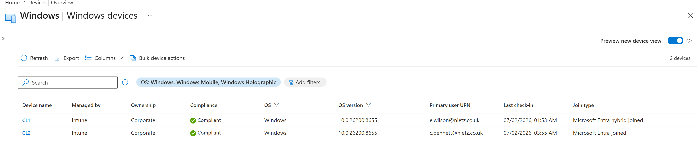
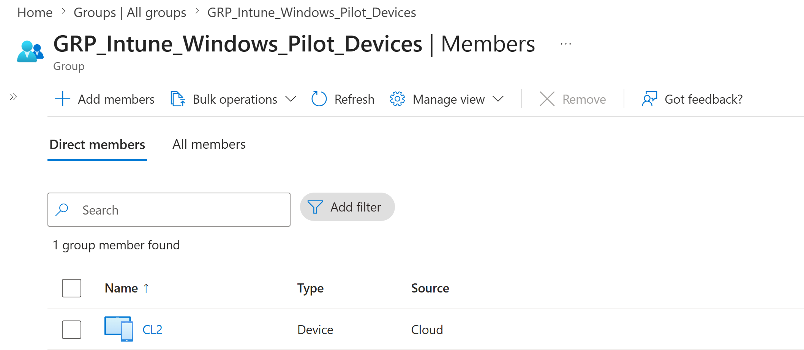
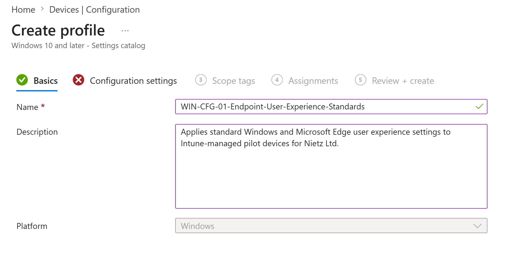
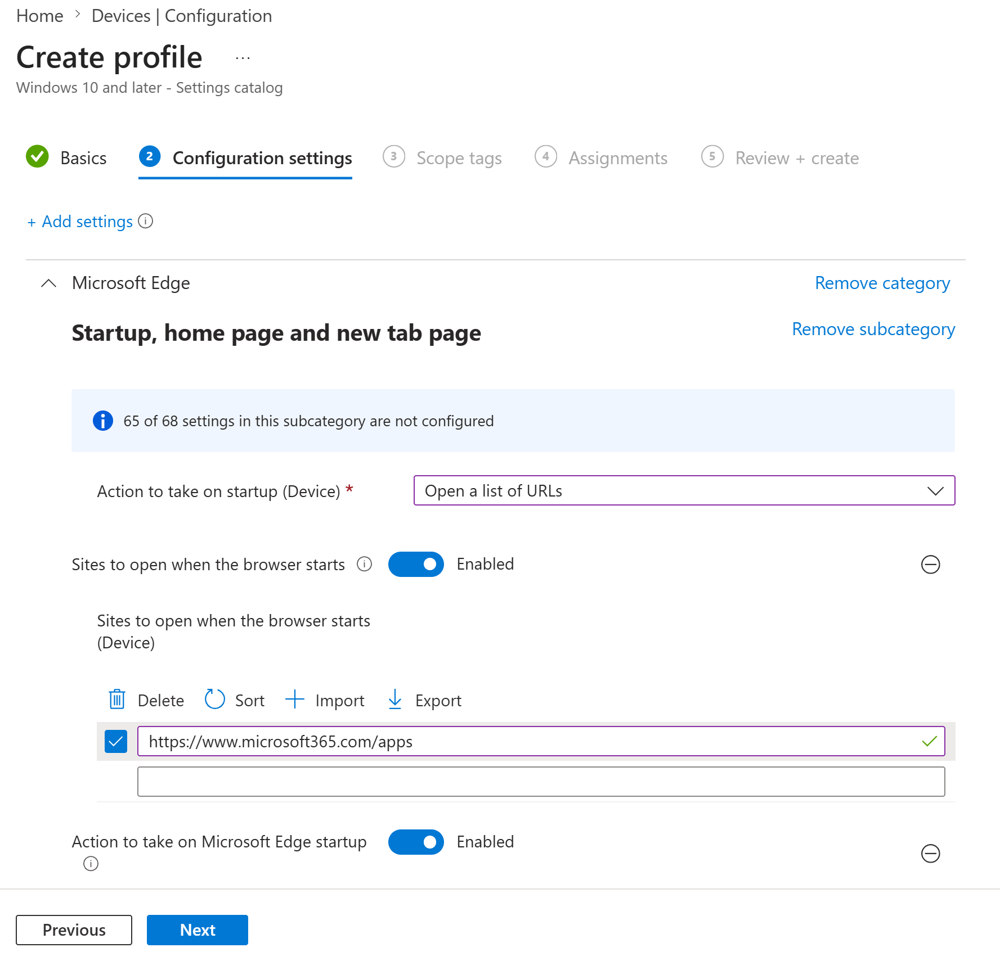
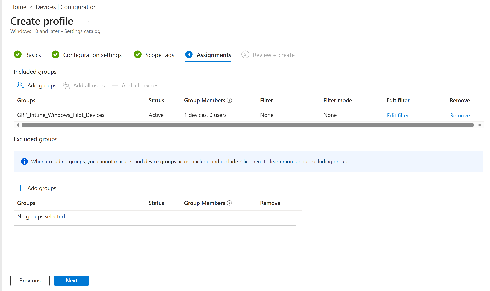
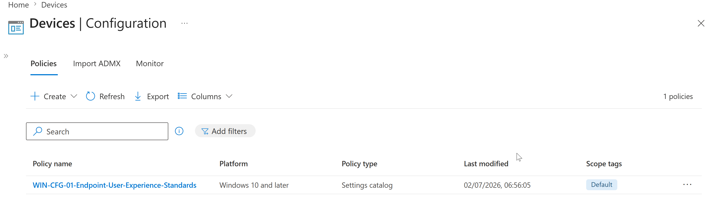
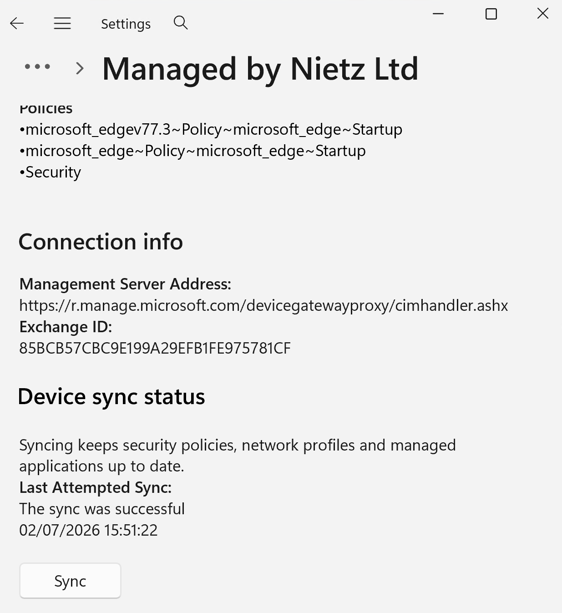
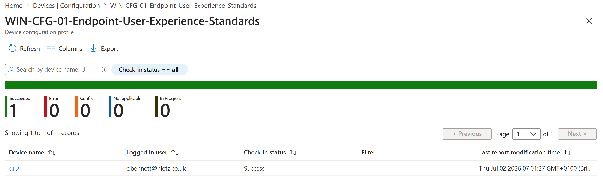
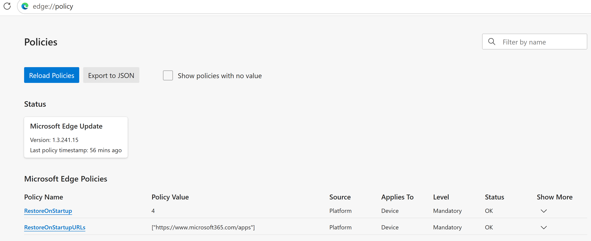
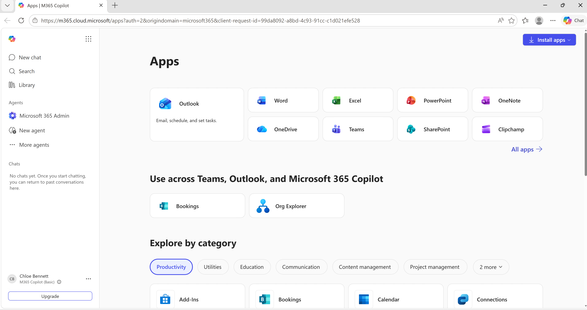

Lab 19: Intune Configuration Profile
Created and validated a Microsoft Intune settings-catalog profile to standardise the Microsoft Edge startup experience on the cloud-native Windows pilot device.
Overview
This lab continued the Nietz Ltd Intune pilot by moving from device enrolment, compliance, and Conditional Access validation into Windows configuration management. I used Microsoft Intune to deploy a settings catalog profile that configures Microsoft Edge to open the Microsoft 365 apps page at startup on the pilot device group.
The completed configuration targeted the cloud-native Windows pilot device CL2, assigned to Chloe Bennett. The final evidence confirms the policy was created, assigned to the correct device group, delivered successfully to CL2, visible in Edge policy state, and working in the browser.
Objective
The objective was to create a device-targeted Intune configuration profile that applies a standard Microsoft Edge startup URL for Nietz Ltd pilot devices, then validate the policy through Intune deployment status, Windows sync evidence, Edge policy reporting, and the final user experience.
Environment
| Component | Value |
|---|---|
| Company | Nietz Ltd |
| Microsoft 365 / Entra domain | nietz.co.uk |
| Management platform | Microsoft Intune |
| Configuration profile | WIN-CFG-01-Endpoint-User-Experience-Standards |
| Profile type | Windows 10 and later - Settings catalog |
| Target group | GRP_Intune_Windows_Pilot_Devices |
| Pilot device | CL2 |
| Primary user | c.bennett@nietz.co.uk |
| Join type | Microsoft Entra joined |
| Previous dependency | Lab 18: Conditional Access pilot validation |
Configuration
1. Confirmed the Intune Windows Device Inventory
I confirmed that both Windows pilot devices were visible in Intune, compliant, corporate-owned, and reporting their expected join types before creating the new configuration profile.

2. Confirmed the Pilot Device Group
I validated that GRP_Intune_Windows_Pilot_Devices contained only CL2, keeping the first endpoint user experience policy limited to the cloud-native pilot device.

3. Created the Settings Catalog Profile
I created the Intune profile WIN-CFG-01-Endpoint-User-Experience-Standards using the Windows settings catalog profile type.

4. Configured Microsoft Edge Startup Behaviour
I configured Microsoft Edge to open a defined startup URL and set the URL to https://www.microsoft365.com/apps.

5. Assigned the Profile to the Pilot Device Group
I assigned the profile to GRP_Intune_Windows_Pilot_Devices, with no filters and no excluded groups.

6. Confirmed the Profile Was Created
I confirmed the new configuration profile appeared in the Intune configuration policy list with the expected platform, policy type and default scope tag.

Validation
7. Synced CL2 with Intune
I manually synced CL2 from Windows Settings and confirmed the device remained managed by Nietz Ltd after the configuration profile assignment.

8. Confirmed Successful Deployment to CL2
I validated the Intune device assignment report and confirmed CL2 reported a successful check-in for the profile.

9. Validated Microsoft Edge Policy State
I confirmed the applied Edge policies from edge://policy, including RestoreOnStartup and RestoreOnStartupURLs, both applying to the device at mandatory level.

10. Confirmed the User Experience
I opened Microsoft Edge on CL2 and confirmed the browser landed on the Microsoft 365 apps page for Chloe Bennett.

Key Technical Outcomes
The completed work covers Intune settings-catalog profile creation, device-group targeting, controlled pilot assignment, manual device sync, deployment validation, Edge policy verification and confirmation of the endpoint user experience.
Summary
- Confirmed CL1 and CL2 were visible as compliant Intune-managed Windows devices.
- Validated
GRP_Intune_Windows_Pilot_Devicescontained CL2 as the pilot target. - Created
WIN-CFG-01-Endpoint-User-Experience-Standardsas a Windows settings catalog profile. - Configured Microsoft Edge to open
https://www.microsoft365.com/appsat startup. - Assigned the profile to the pilot device group with no filters or exclusions.
- Synced CL2 and confirmed the Intune deployment completed successfully.
- Validated the applied Edge policy and confirmed the Microsoft 365 apps page opened on CL2.